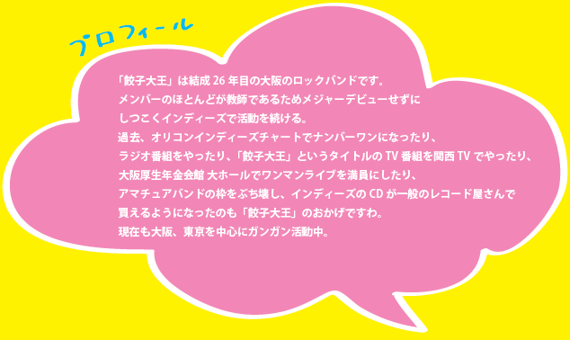

第一章
「餃子大王」は１９８３年に大阪教育大学に進学した森かずおが、
大学の軽音楽部でメンバーを集め結成。
結成当初は
森かずお（ギター ボーカル）
しげお（ドラム）
わたるちゃん（ギター）
大将（ベース）の4人だった。
当時、かずおが愛読していた宝島にライブハウスオープンの記事を見つけ、
すぐにそのライブハウス「エッグプラント」に出演交渉し、ライブハウス初出演。
このとき、のちにソウルフラワーユニオンを結成する中川敬が「レモンスクイーザー」というバンドで対バン。
彼もライブハウス初出演だった。
当時の大阪のライブハウス 「エッグプラント」「キャンディーホール」「ヤンタ鹿鳴館」
「不思議の国のアリス」「センサスホール」等に出演し精力的にライブ活動を行い、
カルト的な人気を得るもののライブハウスでまぁまぁ頑張っているバンドの域を出なかった。
第二章
そんな餃子大王から初代ベーシスト「大将」が失踪し、脱退。
（その後、バイク雑誌に大将が投稿しているのを発見。生きていることが確認される。）
ここで黒人女性ベーシスト「つるん」とsaxプレーヤーとして「アラブ人」が加入。
さらに、かずおの弟「ジロー」がギタリストとして参加。
さらにさらに、ライブを見に来ていたジローの友人が無理やり舞台で踊らされ、それ以後そのふたりは「元気ブラザーズ」のあかさん、あおさんになる。
メンバーを補強した餃子大王は、大阪伝説のライブハウス「バーボンハウス」にナイトギャラリーレコード森田氏の口添えにより出演をするようになりだんだんと人気が出てくるのであった。
第三章
バーボンハウスは当時、かずおがよくライブを見に行っていたあこがれの場所でした。
「爆風スランプ」「ストリートスライダース」等のライブを見て、いつかは俺も・・・・とおもっていた夢をかなえたのである。
当時はやっていた「ソノシート無料配布ライブ」を企画し「はだしのゲン」「UYOKU」2曲入りのソノシートを作成した。
バーボンハウスでの無料配布ワンマンライブは大成功し、ワンマンで200人を超える動員を記録。大阪に餃子大王というすごいバンドがいる！と各紙（といってもDOLLとか宝島とかです）で評判を呼ぶ。
1988年YAMAHAのバンドエクスプロージョンというバンド世界１を決める大会（決勝は武道館）に出場するため、ベーシストにじゅんちゃんを誘う。「いっしょに武道館に行きましょう！」が勧誘の決め手だったが、関西沖縄大会の人気大賞に終わり、世界大会に参加できずであった。武道館へいく約束はまだ、はたせていません。
じゅんちゃん加入後、バーボンハウスでのライブは大好評で動員もウナギ登り。500人を超える動員で、酸欠、危険な状態におちいるほどであった。
第四章
バーボンハウスのオールナイトイベントに出演するたびに動員を増やしていった餃子大王。
そんなとき、初の東京ライブの話が・・・・。
「エッグプラント」の出演バンドが法政大学でライブをすることなり、それにいっちょかましてもらう。
しかし、その東京初ライブ、しげおがディズニーランド修学旅行引率のため欠席。青さんがドラムをたたき、青さんのかわりはかずお、じろうの弟「きよぞう」が務める。
しかし、そんな東京初ライブも大好評に終わり、次の東京ライブはいきなり、「新宿ロフト」ワンマンが決定。しかも東京初ワンマンもソールドアウトになり、いよいよ、業界関係者からの接触が激しくなってくる。
つづく